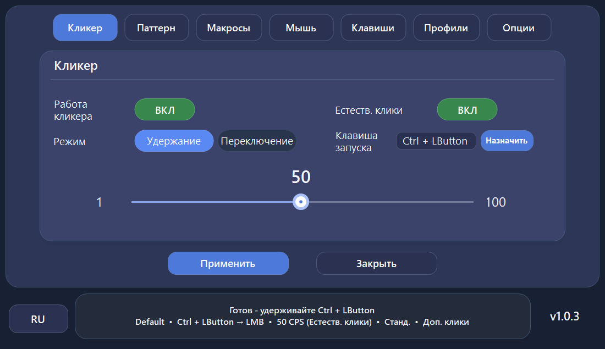
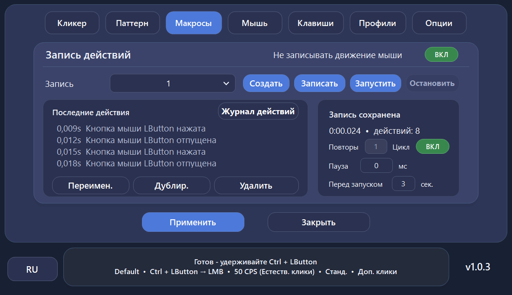
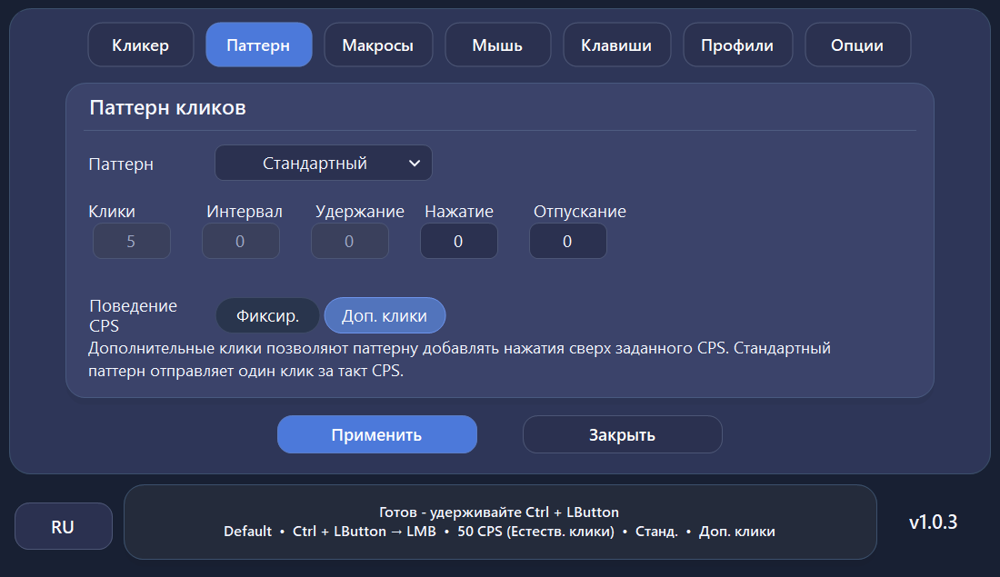
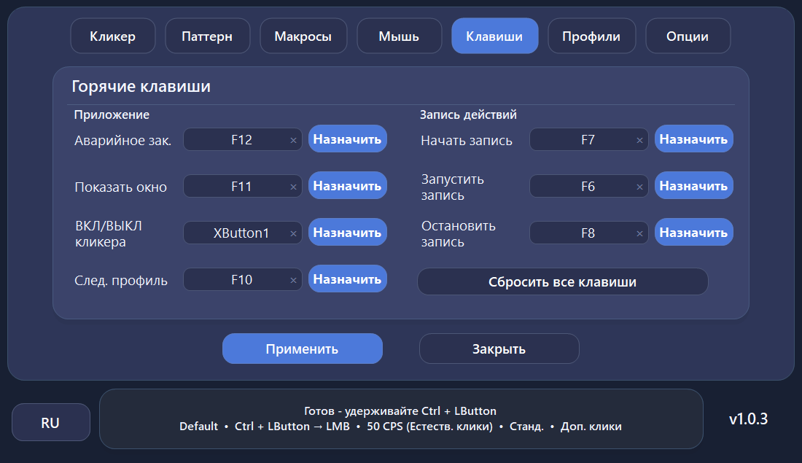
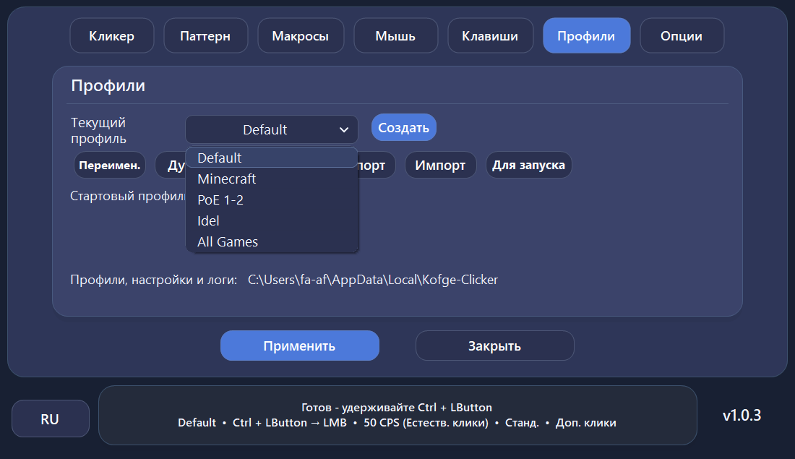
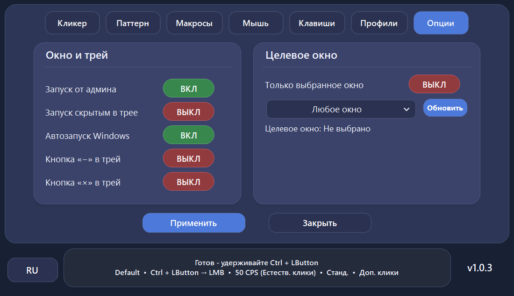
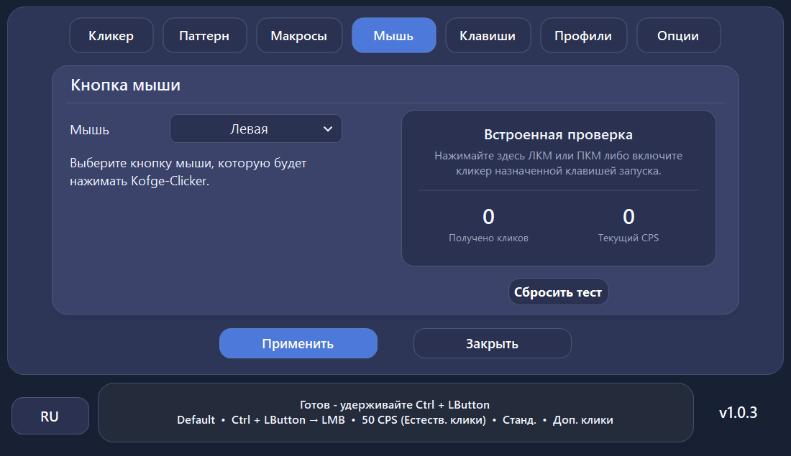

⚡
1–100 кликов в секунду
Настраивайте скорость, интервалы и естественные отклонения между кликами.
Настройте частоту кликов или запишите действия мыши и клавиатуры. Запускайте их горячей клавишей и сохраняйте настройки в профилях.

Настраивайте клики, записывайте и воспроизводите действия, управляйте горячими клавишами, профилями и целевыми окнами без платных разблокировок и премиум-версий.
Настраивайте скорость, интервалы и естественные отклонения между кликами.
Записывайте и воспроизводите движения и кнопки мыши, прокрутку, клавиатуру и сочетания клавиш, настраивайте повторы, задержку запуска и журнал действий.
Клавиатура, кнопки мыши и сочетания с модификаторами работают даже когда окно Kofge-Clicker не в фокусе.
Небольшие случайные отклонения интервалов и короткие паузы между кликами.
Сохраняйте разные конфигурации и быстро переключайтесь между ними без повторной настройки.
Выбирайте конкретное окно приложения для более контролируемой автоматизации.
Нажмите на скриншот, чтобы рассмотреть детали и переключаться между изображениями. На телефоне карточки можно листать свайпом.

МакросыЗапись, воспроизведение и редактирование действий мыши и клавиатуры.
Паттерны кликовНастройка поведения и таймингов кликов.
Горячие клавишиУправление кликером, профилями и макросами из любого окна.
ПрофилиСохраняйте и быстро переключайте готовые конфигурации.
Привязка к окну и параметрыОграничьте автоматизацию выбранным окном приложения.
Мышь и тест кликовВыберите кнопку и проверьте результат по живому счётчику CPS.Скачайте и запустите EXE, затем попробуйте эти настройки.
На вкладке «Кликер» нажмите «Назначить», выберите F2 и режим «Удержание».
Установите 15 CPS (кликов в секунду). Нажмите «Применить» и включите «Работа кликера».
Удерживайте F2 для кликов, отпустите — для остановки. По умолчанию аварийное закрытие — F12.
Все вкладки, макросы, горячие клавиши, примеры настроек, обновления и решение проблем.
Автокликерам нужен низкоуровневый доступ к вводу Windows. В Kofge-Clicker реализация не спрятана внутри закрытого бинарника — исходный код доступен публично.
Полный исходный код Kofge-Clicker доступен на GitHub под лицензией MIT.
Механизм обновления Kofge-Clicker проверяет доступные данные релиза, включая размер файла, формат, версию и SHA-256 от GitHub, когда он доступен.
Запуск от администратора нужен только как вариант совместимости с приложениями, запущенными с повышенными правами.
Kofge-Clicker использует стандартные механизмы Windows для отслеживания клавиатуры и мыши, чтобы горячие клавиши работали, когда в фокусе находится другое приложение. Сгенерированный ввод помечается, чтобы Kofge-Clicker мог отличать его от физических нажатий и не запускать сам себя.
Новые или редко скачиваемые Windows-приложения могут отображаться как неизвестные для SmartScreen или проходить дополнительную проверку браузером, пока у файла формируется репутация. Всегда проверяйте, что Kofge-Clicker скачан из официального GitHub-репозитория.
Да. Нет платного тарифа, рекламы, подписки и отдельного набора премиум-функций.
Нет. Официальные релизы распространяются как один EXE-файл со всеми необходимыми компонентами для Windows.
Программы, работающие с повышенными правами Windows, иногда требуют, чтобы инструмент ввода работал на том же уровне привилегий. Поэтому режим администратора доступен как опциональная настройка совместимости.
Да. Полный исходный код на C# находится на GitHub. Проект использует .NET 8 для Windows и собирается через .NET 8 SDK.
Используйте только официальную страницу релизов репозитория Kofge1/Kofge-Clicker, ссылки на которую размещены на этом сайте.
Выберите приватную сборку только для себя или профинансируйте функцию для основной бесплатной версии Kofge-Clicker. Возможность реализации, стоимость и сроки согласуются до начала работы.
Аккаунт GitHub не требуется. Конструктивные отзывы, сообщения об ошибках и идеи помогают улучшать Kofge-Clicker.
Kofge-Clicker остаётся полностью бесплатным и с открытым исходным кодом. Если проект оказался полезен, вы можете добровольно поддержать его. Донат ничего не разблокирует и не меняет доступ к функциям.
ERC20
TRC20
Перед переводом обязательно проверьте выбранную сеть.
Последняя стабильная версия, один EXE без установки, без рекламы, подписок и платных ограничений.